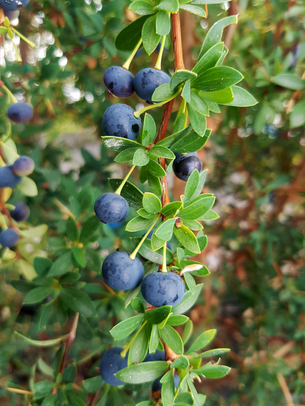

🌿 Flora de la Patagonia 🍂
Las plantas más resistentes del mundo crecen aquí, soportando vientos de más de 100 km/h
🌿 Bosques de Lenga y Coigüe
Los bosques nativos de Punta Arenas están formados principalmente por lengas y coigües de Magallanes. En otoño, las lengas se visten de rojo, naranja y dorado, creando paisajes espectaculares.


El Notro (Ciruelillo)
Es un árbol que se llena de flores rojas brillantes en primavera. Crece en los bordes de los bosques y cerca de ríos. ¡Es como un semáforo rojo natural en medio del verde!

Musgos y Líquenes
Los bosques patagónicos están cubiertos de musgos esponjosos verde esmeralda y líquenes que cuelgan de las ramas como barbas de duende. ¡Parecen bosques de cuentos de hadas!

El Michay
Este arbusto tiene espinas largas y flores amarillas como campanas pequeñas. Sus frutos azules son alimento para los pájaros. ¡Es una planta guerrera que sobrevive al frío extremo!

El Calafate
Un arbusto con espinas y flores amarillas que da unos frutos de color oscuro muy dulces. Dicen que si comes frutos de este arbusto en la Patagonia... ¡siempre volverás allí!

Frutilla Silvestre
Una plantita pequeñita que crece casi pegada al suelo. En verano da unas frutillas muy chicas que esconden el sabor más dulce e intenso que un niño pueda probar jamás en el bosque.

Los Chochos (Lupinos)
Son flores altas y coloridas que adornan los caminos de la Patagonia en verano. ¡Tienen un tallo tan largo que parecen varitas mágicas cubiertas de campanitas moradas, rosadas y azules!